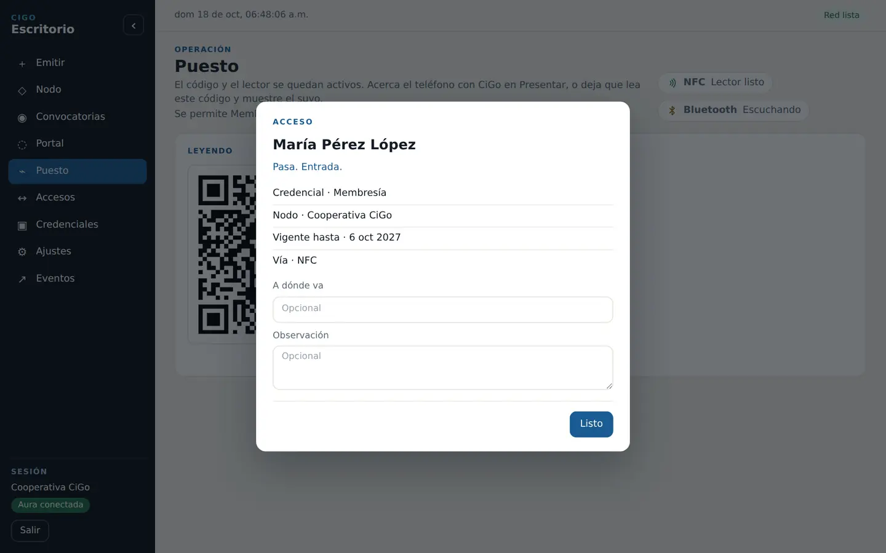
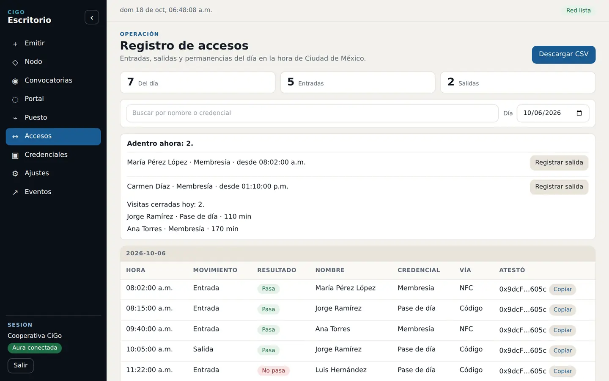

1 · Door
Publicar la convocatoria.
Quien administra define la pregunta, la credencial requerida, el alcance y el plazo. Solo las personas cubiertas por esa credencial ven la votación.
Credenciales verificables, votaciones y accesos desde el teléfono de cada persona y el escritorio de la institución.
Elige tu contexto
Elige tu sector. Verás el resultado operativo antes que la tecnología que lo hace posible.
Sindicato o gremio
La dirigencia emite credenciales verificables, abre una votación para miembros vigentes y exporta su cierre. Las notificaciones push y el modo privado con ZKP continúan en integración durante el piloto.
Cómo opera un sindicato y qué pide la ley para votar →Universidad o escuela
La institución emite credenciales a su comunidad y define los procesos que quiere operar: biblioteca, laboratorio, actividades o consultas internas.
Condominio o residencial
La caseta verifica presentaciones desde el teléfono y conserva una bitácora local. La comunidad puede probar además una consulta o asamblea interna.
Organización de eventos
El piloto permite ensayar creación de eventos, emisión, acceso, cancelaciones, reembolsos y dispersión sin mover dinero real.
Protección Civil y gestión de riesgos
La autoridad consulta la credencial del plan vinculada a una función y comprueba folio, vigencia, responsables, aforo autorizado, huella documental y revocación desde una ficha con QR.
CiGo facilita la verificación; no sustituye el programa, la inspección, la autorización ni las facultades de la autoridad.
Operación actual
Door organiza la operación; CiGo permite actuar desde el teléfono; cada cierre deja evidencia para revisar y conservar.
Recorrido de votación
La organización publica desde Door, la persona vota y conserva su recibo en CiGo, y quien convocó cierra la jornada para generar el acta.
1 · Door
Quien administra define la pregunta, la credencial requerida, el alcance y el plazo. Solo las personas cubiertas por esa credencial ven la votación.

2 · CiGo
La persona firma desde su teléfono. El recibo acredita su participación sin publicar la opción marcada.

3 · Cierre
El documento reúne resultado, periodo, responsables, folio, transacciones y participación. Esta muestra usa datos ficticios y una red de prueba.
Descargar acta en PDFDoor · escritorio de la institución
Las tres pantallas que opera el personal durante el día: la emisión guiada, el puesto que lee el teléfono y el registro de accesos que se exporta en CSV.

Door · emitir
El personal elige el tipo de credencial, captura los datos y la vigencia, vincula la identidad del teléfono por QR o NFC y entrega la credencial desde una sola pantalla.
Solicitar una demostración de Door →
Door · puesto
El puesto mantiene el código y el lector activos. Al acercar el teléfono, el guardia ve si pasa, con qué credencial y hasta cuándo es vigente.

Door · accesos
Entradas, salidas y permanencias del día, quién está adentro ahora y la descarga en CSV. Todo queda en la computadora de la institución.

Tickets · escritorio
La cartelera reúne fecha, recinto, precio y disponibilidad antes de que la persona firme una compra.
Abrir cartelera →
Tickets · móvil
La persona consulta sus boletos desde la cartera, identifica cada función y los presenta en puerta sin cambiar de aplicación.
Capturas de las versiones actuales de Door y Tickets. Los nombres y direcciones visibles son datos de demostración abreviados.
Cartera en el teléfono
Puesto de control en la laptop
La cartera presenta desde el teléfono y el escritorio verifica en la computadora de la organización.
Servicio para Protección Civil
La propuesta conecta el documento autorizado con el evento que realmente se publica y abre una consulta sencilla para quien inspecciona.
La autoridad o el tercero facultado emite una credencial con folio, huella del plan, aforo, responsables y vigencia. El organizador la vincula a su función.
La ficha con QR muestra si la credencial sigue activa y si el aforo autorizado cubre los boletos publicados para esa función.
Si el plan deja de ser válido, su emisor lo revoca. La consulta deja de mostrarlo como vigente sin reemplazar la decisión de la autoridad.
Piloto recomendado
Medir tiempo de consulta, discrepancias de aforo, documentos vencidos y facilidad de uso para organizadores e inspectores.
Convocatoria pioneros · 12 semanas
La institución elige uno o dos procesos, los opera con personas reales y termina con resultados que puede evaluar.
Convenio, responsables, proceso y criterios de éxito.
Instalación, capacitación y emisión de credenciales.
Votación, accesos o boletaje con acompañamiento.
Resultados, incidentes, cierre y siguiente decisión.
Peranto aporta
Configuración, capacitación, soporte de uso, corrección de errores y evaluación de hardware adicional.
La institución aporta
Participantes, responsables, equipos, hardware necesario y tiempo para capacitar a su comunidad.
Criterios de éxito
Al inicio se acuerdan el número de participantes y uno o dos procesos principales. El éxito no se mide por descargar una aplicación, sino por completar el flujo con las personas responsables.
Entregables acordados al mes 3
Módulo 01 · Identidad
Módulo 02 · Gobernanza
Módulo 03 · Boletaje
Los incidentes se documentan. Peranto corrige errores y las necesidades generales viables se incorporan a la hoja de ruta común. Durante el piloto se liberan versiones estables de prueba de contratos, aplicación, escritorios y Aura.
Al concluir
La institución puede terminar el piloto, conservar sus documentos y evaluar una nueva etapa sin permanencia obligatoria.
Continuidad opcional
Datos y gobernanza
Peranto no opera una base central de datos personales. La información identificable capturada para emitir una credencial permanece en el navegador de la computadora de la institución y solo los datos de la persona pasan a su credencial.
En la computadora institucional
No se envían a una base central de Peranto. La institución debe respaldar y proteger ese perfil.
En la red descentralizada
No se publica el contenido identificable en claro. Una huella puede ser correlacionable y debe explicarse en el aviso.
El piloto opera en Paseo con PAS, un token de prueba sin valor real. No mueve dinero real ni obliga a publicar un dato personal.
Referencias informativas; el convenio y los avisos de cada institución requieren revisión jurídica propia.
Recursos · Sindicatos y cooperativas
Una síntesis para la dirigencia y su asesoría jurídica: cómo funciona la organización, qué exige la ley para votar y qué parte de ese trabajo cubre CiGo. El piloto existe para fijar, con casos reales, una plataforma estándar que sirva a sindicatos y cooperativas.
Estructura
Funciones
Marco legal
Voto electrónico · lo que dice la norma
Desde la reforma de 2019, la elección de la directiva y la aprobación o revisión del contrato colectivo se deciden por voto personal, libre, directo y secreto (LFT, arts. 371 fr. IX, 390 Ter y 400 Bis). Los Lineamientos del Centro Federal, vigentes desde agosto de 2022, permiten que el sindicato use urnas electrónicas o un sistema o aplicación informática en los procedimientos a su cargo, avisando al Centro para que verifique el sistema (art. 27).
El aviso debe dar cuenta de seis puntos. CiGo entrega la documentación de cada uno; el aviso y la firma del acta los hace el sindicato.
Artículo 27 · lo que pide el Centro
Cooperativas
La asamblea general es la autoridad suprema y nombra a los consejos de administración y vigilancia (LGSC, arts. 35 y 36). Se reconoce un voto por socio sin importar su aportación y bastan cinco socios para constituirse (art. 11). A diferencia del sindicato, la cooperativa decide presupuestos, excedentes y nuevos ingresos varias veces al año; reunir a todos cada vez es lo que cuesta.
Lo que ya existe
Para qué es el piloto
Cada piloto opera un proceso real con hasta 50 personas: una elección de delegados, una consulta a la asamblea, la entrega de credenciales. Lo que sale de esos pilotos —el formato de convocatoria, el recibo, el acta y la credencial de miembro— es lo que se fija como estándar para que la misma plataforma sirva a sindicatos y cooperativas sin un desarrollo a la medida de cada organización. Por eso empieza con un proceso medido y no con una venta.
Síntesis informativa. La convocatoria, el aviso al Centro y la firma del acta requieren la revisión jurídica del propio sindicato o cooperativa.
Antes de decidir
Elige el tema que corresponde a tu decisión.
La caseta se detiene. El puesto consulta el registro anclado en la cadena para saber si la credencial sigue vigente. Sin internet, esa revisión no cierra y no hay pase. Quien no necesita internet es la persona: la cartera de CiGo lleva la credencial en el teléfono.
El administrador abre el reto en el escritorio y la persona lo firma con su teléfono, por NFC o con el QR del registro. La credencial queda ligada a las claves de ese teléfono.
El ciclo que medimos en operación incluye acercar el teléfono, la lectura NFC o el enfoque del QR, la comprobación de la firma en el escritorio y la línea que ve el guardia en la bitácora. Arriba se ve ese ciclo: la cartera en el teléfono y el puesto en la laptop.
Una computadora de la organización con el escritorio CiGo, internet en la caseta, y un lector USB NFC o la cámara para el QR. El puesto no pide un torniquete ni un servidor aparte.
No. La persona es dueña del dato que firmó y ella pide el acceso, la rectificación, la cancelación o la oposición. CiGo no envía esa solicitud. Los artículos están en la firma y los datos.
Emitir la credencial digital de cada agremiado y abrir votaciones internas. La convocatoria se consulta y se vota en la aplicación; las notificaciones push están en integración. Al cerrar se exportan conteo y trazabilidad en CSV. La persona responsable lo incorpora manualmente a Documentos y lo firma con la credencial acordada, incluida una que acredite posesión de FIEL o FIREL.
Dura tres meses y no tiene costo monetario de implementación para hasta 50 participantes. La institución aporta equipos, teléfonos, hardware, capacitación interna y una carta convenio que define los alcances para mencionar su participación. Por encima de 50 participantes se acuerdan alcance y costo.
No. Acredita la participación y no dice la opción marcada. En votaciones privadas, la opción se cifra; el contrato y la gestión de las pruebas de conocimiento cero continúan en desarrollo durante el piloto.
La institución puede concluir el piloto o continuar con acompañamiento desde $1,500 MXN mensuales durante 12 meses, según alcance. Incluye soporte operativo y corrección de errores. Hardware, comisiones de red y desarrollos exclusivos no están incluidos; las personalizaciones se cotizan aparte.
La instalación se realiza durante el acompañamiento. CiGo lleva la credencial en Android; Aura firma desde la computadora institucional.
Android · 0.1.135
Android 8 o más nuevo. No hace falta modo desarrollador. Al abrir el archivo, el teléfono pide permitir la instalación desde Chrome, una sola vez.
Chrome puede advertir sobre la instalación desde fuera de Play Store. Durante el piloto se acompaña este paso. La frase de recuperación es la única forma de recuperar la cartera si se desinstala la aplicación.
Chrome · 0.2.0
La extensión firma desde el escritorio de CiGo. Usa la misma frase de recuperación que la app del teléfono.
La institución usa sus propias computadoras. Peranto ayuda con la configuración, capacitación y pruebas del hardware.